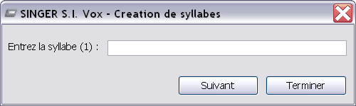

Pour créer le texte en syllabe, vous pouvez écrire directement les syllabes en les séparant par la caractère "/" ou vous pouvez aussi utiliser l'assistant en cliquant sur le boutton
Le logiciel ouvre alors l'assistant qui vous demande les syllabes une par une. Vous pouvez passer a la syllabe suivante en cliquant sur Suivant ou en tapant sur Entrée

Quand vous avez terminé vous cliquez simplement sur Terminer pour valider l'ensemble des syllabes